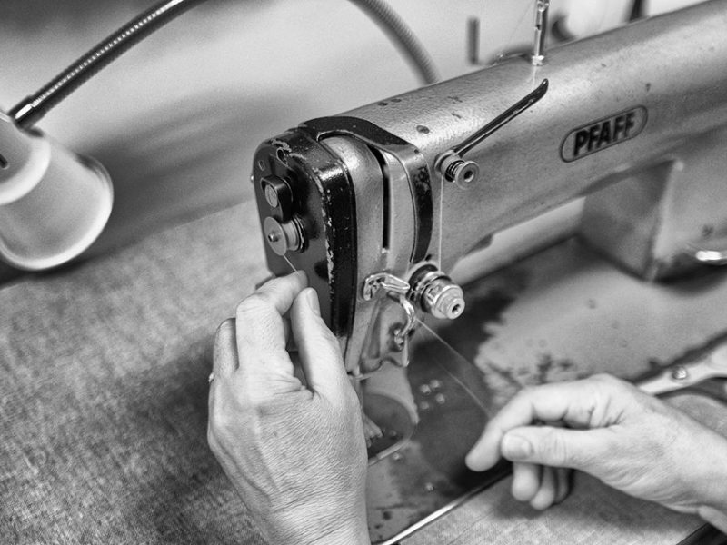

March 20, 2019
All Stitched Up

If the first three R’s are “Reduce, Reuse, Recycle”, then the fourth R is for “REPAIR”. One of the easiest ways to cut down on waste is to extend the lives of things we already have.
When it comes to clothing and backpacks, a repair can bring a much-loved member of your wardrobe back into service. Tired elastic can be replaced, as can broken zippers. Torn liners or failing hems can be repaired. Down jackets or pillows that have lost their fluff can be re-stuffed.
But where to go if you can’t (or don’t have time to) do these repairs yourself? Search for a seamstress or alteration service in your area. Even easier, most dry cleaners have seamstress / alteration services that also perform many clothing repairs for a modest price. In addition to cutting out the waste, you’ll save money. And, because it’s so much faster than shopping for a replacement, you’ll save time as well! That’s what we call a win-win-win!
Photo by Edgardo Lagmay on Unsplash.